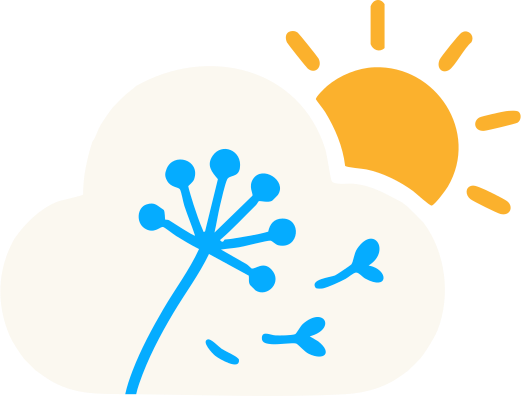

<header>
    <nav class="bg-blue-600 text-white px-6 py-3 flex justify-between items-center">
  <!-- Logo -->
   <div class="flex">
    
     <div class="font-bold text-lg">Weatheria</div>
   </div>

  <!-- Bouton menu -->
  <div class="relative">
    <button 
      class="bg-blue-500 px-4 py-2 rounded-lg hover:bg-blue-700 flex items-center space-x-2"
      (click)="toggleMenu()"
    >
      <span>Menu</span>
      <svg class="w-4 h-4" fill="none" stroke="currentColor" viewBox="0 0 24 24">
        <path stroke-linecap="round" stroke-linejoin="round" stroke-width="2"
          d="M19 9l-7 7-7-7" />
      </svg>
    </button>

    <!-- Dropdown -->
    @if (isOpen) {
      <div 
        class="absolute right-0 mt-2 w-40 bg-white text-gray-800 rounded-lg shadow-lg py-2 z-50"
      >
        @for (page of pages; track page) {
          <a 
            [routerLink]="page.path" 
            (click)="closeMenu()" 
            class="block px-4 py-2 hover:bg-gray-100"
          >
            {{ page.label }}
          </a>
        }
      </div>
    }
  </div>
</nav>
</header>
